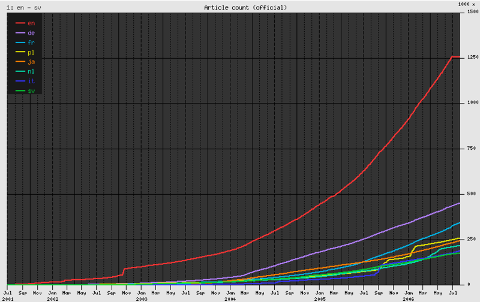
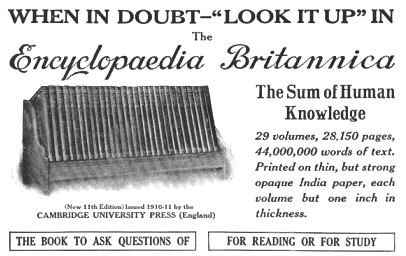

Graph of the number of entries in the Wikipedias of various languages. This exponential growth is a confirmation of Metcalfe's law: the more users of Wikipedia, the better it gets, so more use it.

Encyclopedia Britannica ad from 1913
Compared to a paper encyclopedia, a digital edition has significant advantages. The biggest is cost, as printing and shipping a 50,000-page document represents an enormous expense in the production of an encyclopedia. The digital realm has other significant advantages: the content can be constantly updated and multimedia features can be incorporated. Why read about the phases of a 4-stroke internal combustion engine when you can watch one in action?
In the mid-1990s, Microsoft created Encarta, the first CD-ROM based digital encyclopedia. CDs were a natural evolution for Microsoft because it was shipping its ever-growing software on an increasingly large number of floppy disks. (Windows NT 3.1, released in 1993, required 22 floppies. CDs quickly became more cost-effective, as they hold 500 times more data, and are more reliable and faster, and Microsoft played an important role in introducing CD-ROM drives as a standard feature of computers.)
While CDs hold more data than floppies and are an important technological advancement, this development was soon eclipsed by the arrival of the web. Users could connect to a constantly-updated encyclopedia of unlimited size from any computer without installing it first.
Unfortunately for Microsoft, the Encarta team was slow in adopting the Internet because they felt some of the richness of its encyclopedia was lost on the web. However, with pictures, animations and text, even the early web was good enough and had substantial advantages over a CD-ROM version. In the Internet realm, you only need one Wikipedia, albeit running on hundreds of servers, for the entire world; you don't even need to worry about the cost to “make a copy” of an encyclopedia.
However, the biggest mistake the Encarta team made was not realizing that the Internet could introduce feedback loops. The users of an Internet encyclopedia can also become enhancers of it. If I have a question about what I've read, or I think I've found a problem, I can post a question or fix the problem and report what I've accomplished.
We will discuss later if the ability for anyone to edit, enhance or add data will hurt quality, but it is important to remember that it was the creation of the Internet that allows people in all the corners of the world to work together and learn from each other; a completely new capability for man.
For any faults, Wikipedia became larger than the Encyclopedia Britannica in just 2.5 years. The database now contains more than 15 times as many articles, and is already the best compendium of human knowledge ever created. No corporation invested millions of dollars in engineering or marketing either; it happened seemingly on its own. Even if some of those articles are fluff about Star Trek characters, many are not: Wikipedia's article on carbon nanotubes and many other scientific topics is more detailed and more up to date than Encyclopedia Britannica's. The vast depth of Wikipedia is also a living refutation of perhaps the biggest criticism of free software and free content: that no one will work on the most arcane and boring stuff. The lesson here is that different things are interesting to different people.
Wikipedia is one of the 10 most popular websites on the Internet, receiving 450 times the traffic of Encyclopedia Britannica, and with an article collection that continues to grow at an exponential rate. As Wikipedia has advanced, it has also added a multimedia collection, a dictionary, a compendium of quotes, textbooks, and a news aggregator — and they are just getting started.
In some ways, access to a search engine might seem to obviate the need for an encyclopedia. But while search engines provide a keyword index to the Internet, they do not replace the importance of an encyclopedia: a comprehensive, coherent, neutral, compendium of human knowledge.
Imagine that you wanted to research a topic like nuclear power. Where would you go to get an unbiased opinion: the government? Greenpeace? CNN? Some schools have banned Wikipedia, but secondary sources have long been disallowed. Even so, the article text and links to primary sources can be a useful place to start research on a topic.
While Wikipedia is a powerful resource, what is more amazing is that it is built with the same surplus intellectual energy that others spend on crossword puzzles or Sudoku. Wikipedia provides an additional outlet for people's energy, and something much greater than any one person, or even one company, could accomplish.
A key element of Wikipedia's success is that its founders created a community that people enjoyed working in, and this enjoyment factor brought in even more people. This is a hard thing to do, and it starts with an inspirational vision.
There is no monster multinational corporation behind Wikipedia. There was no CEO who pounded the table and said he wanted to create the biggest encyclopedia ever. Its annual budget is $5,000,000, most of that goes to funding hardware, bandwidth and the salary of the very tiny six-person operations team that keeps the few hundred servers running. Maybe you haven't edited Wikipedia yet, but millions of other registered members, and unregistered users, have created and improved it over the years. I've made a few fixes to a few places — it is very easy!
Some may wonder about the susceptibility to inaccuracies and vandalism of something as widely collaborative as Wikipedia. Fortunately, this digital graffiti does not threaten to spoil things for two important reasons: accountability and pride. The good thing about these shared efforts is that they provide a way to appreciate the importance of one's fellow man.
Every change made to the encyclopedia is permanently logged and publicly recorded in a version control mechanism similar to that used in software; in fact, no changes are irreversible. Unlike graffiti, which can take hours to clean up, dumping unwanted changes or banning users takes mere seconds which is a great discouragement.
Ultimately, part of believing in the viability of a free encyclopedia requires belief in the fundamental goodness of mankind. One must trust that the amount of people in the world who gain satisfaction from making a positive contribution to a product far outnumbers those who enjoy a few seconds of perverted pride in temporary defacement. Moreover, with millions of registered users, there is a virtual guarantee that problems will get noticed.
The obvious vandalism is easily caught and removed, but there are more subtle forms of vandalism that are much harder to catch. In fact, who is to say whether or not any edit is accurate?
Wikipedia has insulated its product from inaccuracies by implementing three content policies:
No original research: Articles should reference published, reliable sources. The threshold for “reliable” is debatable, but in practice, this is not a significant obstacle.
Neutral point of view: An article should fairly and, without bias, represent all significant views that have been published by reliable sources.
Verifiability: The threshold for inclusion in Wikipedia is verifiability. Verifiable means that a reader should be able to determine whether material added to Wikipedia has already been published by a reliable source.
That the community accepts these concepts is a key to Wikipedia's success.
By making these policies an integral part of the culture, Wikipedia created something not necessarily perfectly accurate, but from reputable, verifiable resources which makes it good enough that other people decided it is worth reading and contributing to.
There have been objective studies that have demonstrated that Wikipedia is high quality, comparable to Encyclopedia Britannica. In general, its greatest challenge is in political articles where emotions run high, and most contributors would describe themselves as liberal. This is further complicated because many facts are disputed: some scientists say Global Warming provides an imminent danger to humanity, while others say it is a hoax, and Wikipedia cannot resolve this contradiction between published, reliable sources.
Even for the cynics who believe that the vandals may still win, consider that since its creation in January 2001, Wikipedia has remained as much an encyclopedia as a self-organizing technological and social experiment. As Wikipedia evolves, tools are being created to detect and remove vandalism, and tag articles that don't conform to style guidelines. Sometimes articles have various warnings about how it is a work in progress, which is a useful warning. Every page also has a discussion page where issues are debated before the content itself is updated.
In short, Wikipedia is an evolving relationship between people and their software. For example, should anonymous users be allowed to make edits? Many believe they should not because anonymity decreases accountability. This is an ongoing discussion.
Wikipedia is free to read, and a study suggested that it could generate up to $100 million per year in advertising revenue. One day, they might choose to, and could use this money in any number of ways: from acquiring proprietary content like maps, legal documents, and document templates, and making them free, to hiring employees to charge ahead in areas underfunded by the community.
Eric Raymond, in his book The Cathedral and the Bazaar, analogizes the free software development model to a bazaar – a disorganized conglomeration of input and ideas. That's an unsatisfactory image, however, because it suggests something primitive and disorganized. Cathedrals took hundreds of years to build, but in less than 10 years, Wikipedia has produced a larger, and more comprehensive product than its much older competitors. It is better to think of this free software product as an already very polished cathedral in its early years of development.
What else can independent, highly co-operative free software communities build? The answer is a nearly infinite number of things. Specifically, an entire software stack that is as free as Wikipedia and uses zero Microsoft code. The software used to run Wikipedia is an afterthought to many, but it is a significant piece of technology. While Wikipedia and its software won't make a large dent in Microsoft's profits, the Linux kernel is a mortal threat.